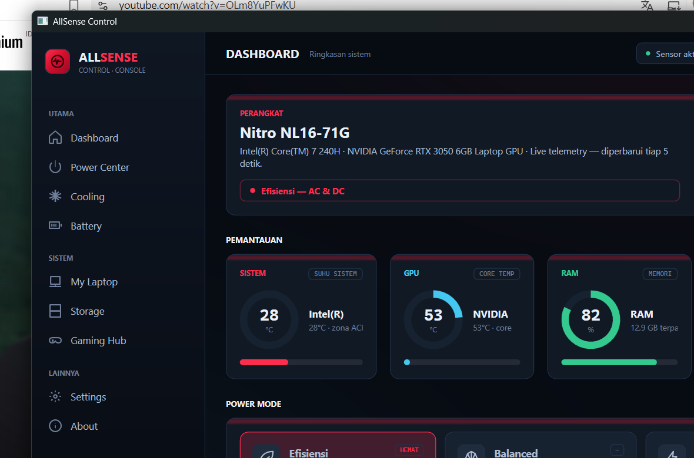

Satu tombol mengganti mode daya AC/DC — Efisiensi, Balanced, Performance. Sambil itu, suhu sistem (ACPI), GPU core, dan beban RAM terbaca langsung. Tanpa admin, tanpa driver ring0, tanpa ribet.

Tema situs ini adalah tema aplikasi: latar #070B12, panel #111925, merah #FF2D4D untuk daya & status, biru #45C8F0 untuk data, hijau #34C98F untuk kondisi sehat. Native WPF — tanpa WebView2, hemat memori.
Navigasi mengikuti struktur aplikasi: UTAMA untuk kendali, SISTEM untuk informasi perangkat, LAINNYA untuk konfigurasi.
Ganti Efisiensi / Balanced / Performance dalam satu klik — terpisah untuk colokan dan baterai, tersimpan di profil Windows.
Sistem (zona termal ACPI), GPU (sensor core), dan beban RAM — terpolling tiap 5 detik di thread belakang, UI tetap halus.
Ctrl+Alt+A memunculkan jendela dari mana pun — bisa di-custom di Settings, dengan rollback otomatis bila bentrok.
±200 MB RAM, native WPF tanpa WebView2, tanpa UAC. Jalankan langsung — tidak perlu izin atau instalasi sistem.
Suhu sistem diambil dari zona termal ACPI (~28°C idle), bukan core MSR yang butuh driver ring0. GPU membaca sensor inti (core), bukan Hot Spot/Memory Junction yang jauh lebih panas dan tidak dibandingkan dengan Task Manager.
Jika sensor GPU kedua (iGPU) tidak ada nilainya, NaN diabaikan dengan guard tersendiri — tampilan tidak pernah jatuh ke angka rusak.
Tombol Cek update mengambil rilis stabil terbaru (semver, abaikan prerelease), menginstal sendiri lewat updater.bat, menunggu proses mati, lalu restart. Repo diset di Settings.
--selftest memverifikasi WMI, mode daya, sensor, dan roundtrip — exit 0 berarti lolos. Semua uji hijau: power, cpu_sensor, gpu_sensor, memory, storage, hotkey, update_tagparse.
Error yang tidak tertangkap ditulis ke %TEMP%\AllSense-selftest\crash.log, dengan dark title bar dan manajemen startup yang sudah teruji.
Pembacaan WMI berjalan di Task.Run dengan guard anti-tumpang-tindih; UI diperbarui via dispatcher. Layar tidak pernah membeku walau WMI lambat.
WMI merespons, zona termal ada, GPU core terbaca. Status hijau dengan angka live tiap 5 detik.
Bacaan menembus ambang (mis. GPU core > 80°C). AllSense menyorot sensor yang panas, bukan menghiburmu.
Bila API mode modern menolak (kode 87), AllSense jatuh ke skema legacy. Dua keluarga GUID tidak pernah dipertukarkan.
Nilai NaN dibuang, tidak dihitung. Status merah hanya muncul saat benar-benar tidak ada data.